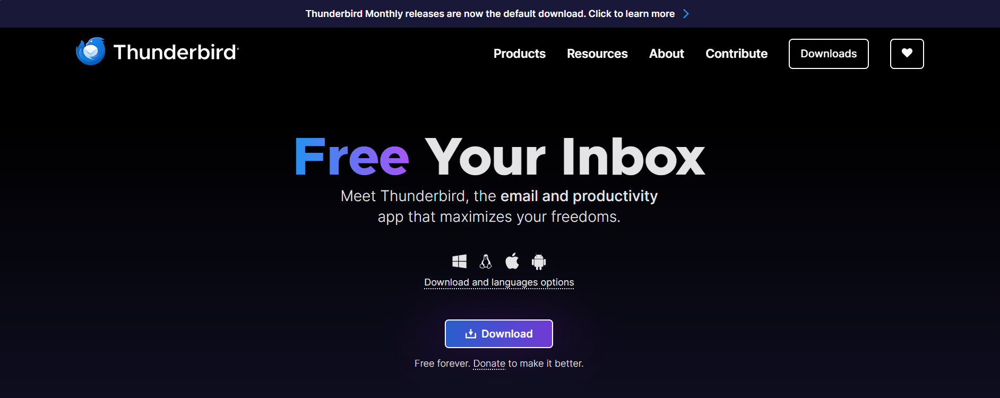
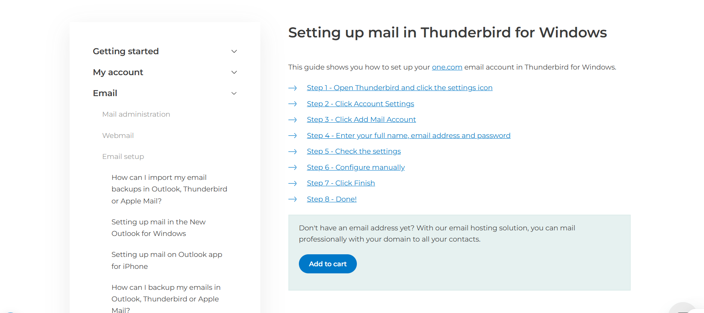
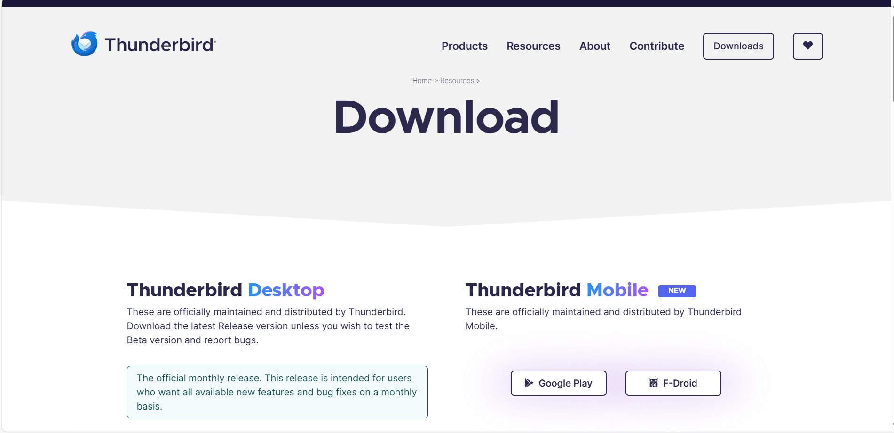
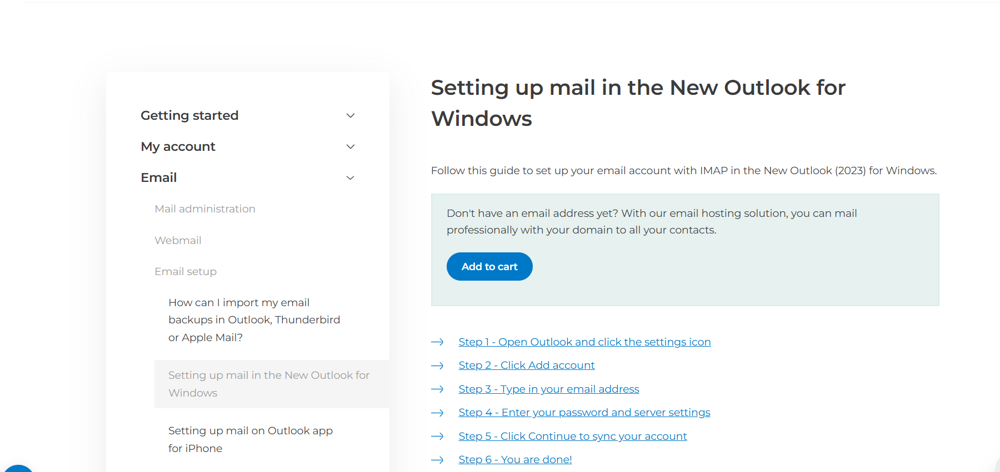

Step 4: Confirm and Finish
Click “Done” to finish setup. Thunderbird will test the connection and add your account.

Email: demo@your-name.com
Visit thunderbird.net and download the installer for your operating system. Run the installer to install Thunderbird.
Launch Thunderbird and click on “Set up your existing email address”.
 Enter your name, email address (e.g., demo@your-name.com), and password. Thunderbird will automatically try to configure the settings.
Click “Done” to finish setup. Thunderbird will test the connection and add your account.
You can configure IMAP/SMTP manually by clicking “Configure manually”.